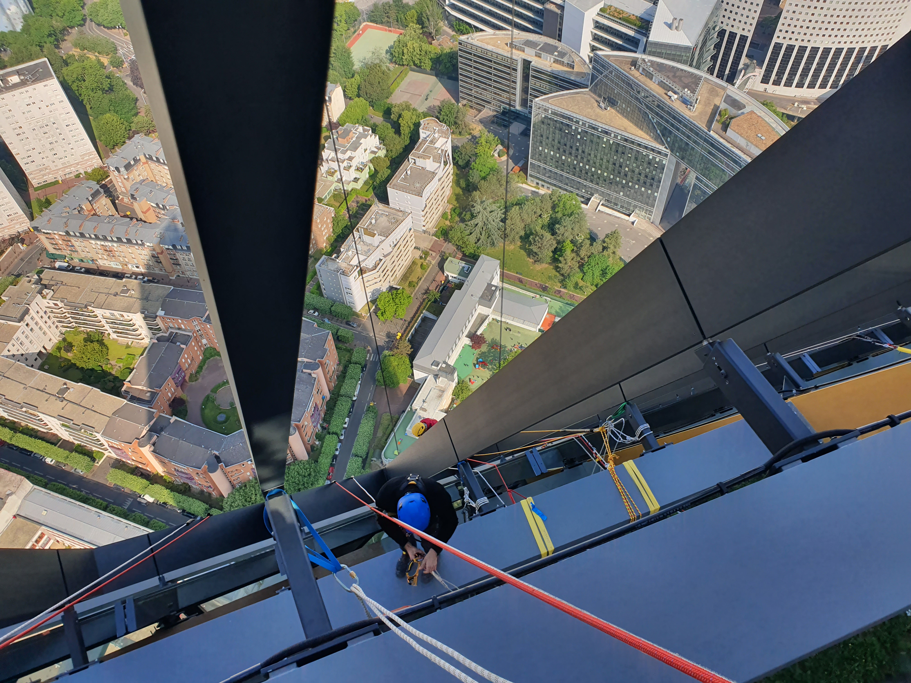

Travaux Spéciaux
L'ingénierie de l'extrême au service de vos structures.

Maintenance de Tours
Nettoyage haute pression, vitrages et maintenance technique sur immeubles de grande hauteur (IGH). Une expertise pointue pour les façades modernes.
Sécurisation sur-mesure
Conception et installation de lignes de vie, points d'ancrage et filets de protection. Nous rendons vos toitures conformes aux normes de sécurité.
Événementiel & Publicité
Pose de bâches publicitaires grand format et installations temporaires complexes pour le secteur de la communication et du cinéma.
Expertise Industrielle
Intervention en milieux confinés, silos, ou sur structures métalliques complexes nécessitant une maîtrise totale des cordes.
Une approche par l'ingénierie
Chaque projet spécial fait l'objet d'une étude de risques et d'un plan de prévention rigoureux. Cap Cordes ne se contente pas de descendre en rappel : nous concevons la solution technique la plus sûre pour vos projets atypiques.
Étudier mon projet